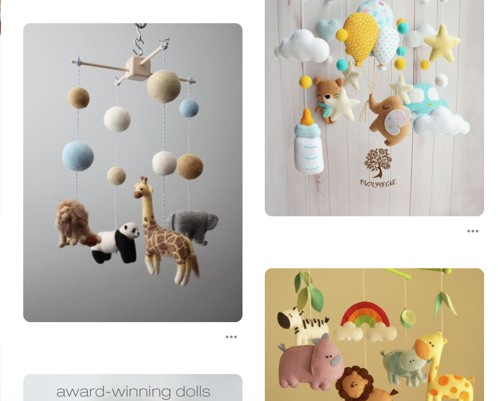
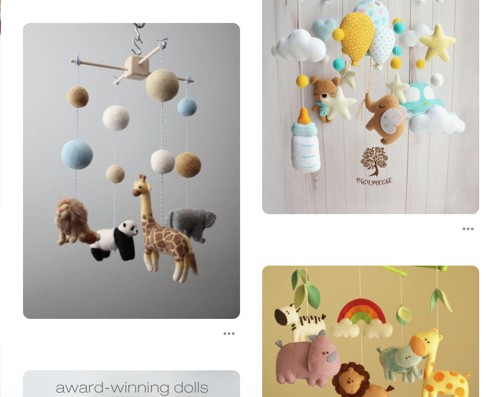
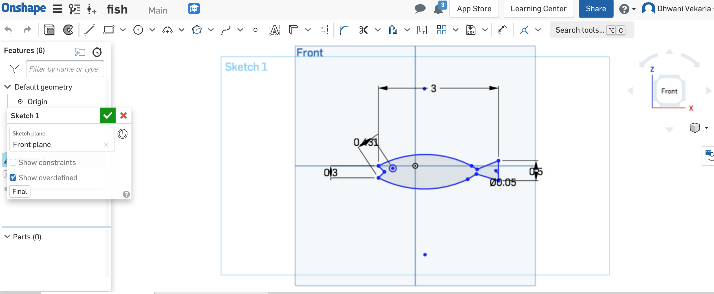
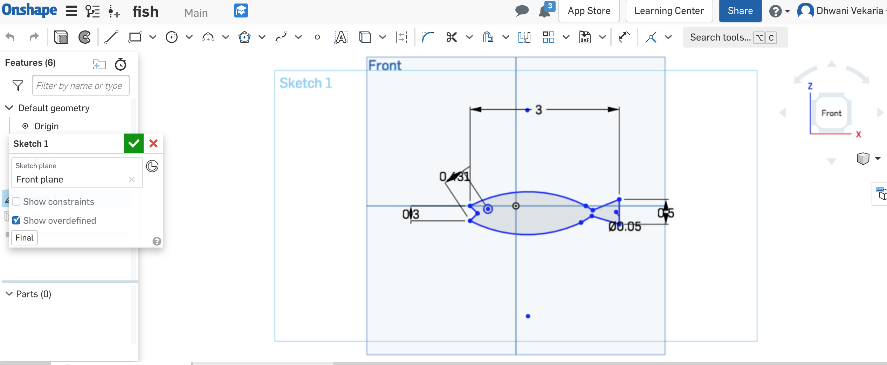

A8: Final Project!

Inspiration
Me and my roommate have a cat and I wanted to build a toy of some kind for her. She loves to play with teasers but thought it might get boring to just build one. So through some reearch I learned about the baby mobiles and thought why not something along the lines for a cat.
 

Design Concept
My final project concept is a hand held or attachable cat toy mobile made with the combination of several techniques: 2D Design, Laser Cutting, Moving Parts, and 3D CAD design and printing. The intended use case is for playing and making cats excersice. The context can be hand-held, and can also be stuck into under the table as thats our fav place of our cat.
Design Process
- Created support in Illustrator and laser cut the wood
- While creating the support I choose to use wood by purchasing it from the Mill
- After the first print, I realized that it would move easily if one of the bars was shorter than the other
- So I did one bar to be 9.8in and another bar to be 8.9in
- After that, I started off building the fish shapes on Onshape for 3D printing which was fairly easier than other shapes
- Then I wanted to create hollow shapes for the rest of the parts for my mobile so I planned on using fusion 360 for CAD modeling a hollow cube, sphere, and heart. I tried to work if I could create but then it didn't really work and was taking really long in creating. So, I looked at Thingiverse and found these shapes. When I downloaded it, they were metal and really large in size. I had to resize them in Fusion360 to make it the size I wanted
 

Printing and Execution Process
Support Parts
When laser cutting the first time I didn’t realize I did the rivet size and the center holes the same size. So I had to redo them with proper size measure.

3D printing
- Printing the fishes
- Those didn't seem to be much of the pain when putting in the printing 3D printing the Hollow parts. This is where I had the most trouble and I didn't realize that the 3D printers at the mill cant produce hollow shapes directs. It took almost 10 tries to realize that in order to create the shapes to be hollow I need to generate support and generate raft for them to be stable enough to get the design I wanted.


Final Product
Wooden parts turned out to be okay. Now it was just the matter of checking the rivet (provided by Joshua in class) works and if it moves smoothly or not. And apparently, it did.
3D parts turned out to be fine. Even though it took me multiple attempts to get it right.
Bill of Materials
- Plywood for laser cutting: Bought from the Mill - May 29th. 300mm x 300mm x 3mm wood
- 3D printing filament: Shared with Megha
- Rivet for moving parts: Already there from class given Joshua
- Elastic string and bells bought from Art and Supply store in U-District
Source Files
- Onshape_Fish1
- Onshape_Fish2
- Illustrator File
- Heart Shape STL
- Cube Shape STL
- Sphere Shape STL
- Heart gcode
- Cube gcode
- Sphere gcode
- Fish gcode
Testing with Gracy


Acknowledgement
Thanks to Megha for the filament. Lucas to help with OnShape. And Joshua for providing rivets in class and Onshape file for the size. Staff at the mill for helping on adjusting the laser cutting settings and also suggesting to using Raft and support both.